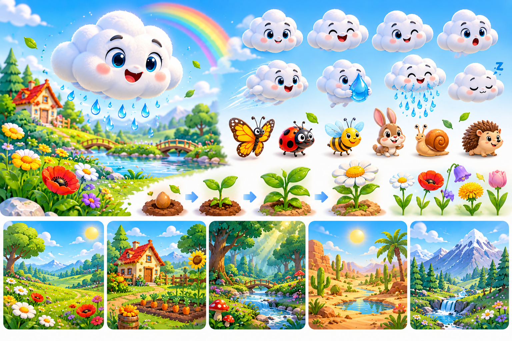
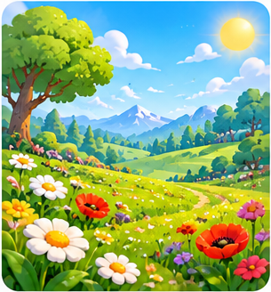
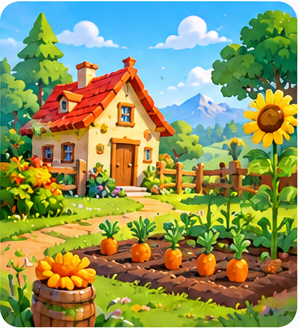
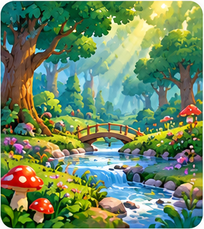
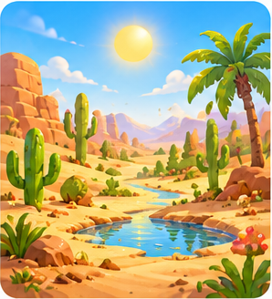
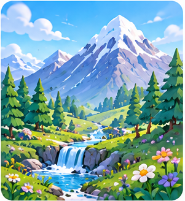

Výtvarná bible celé hry: styl, postavy, prostředí, efekty, animace a výrobní specifikace assetů.
děti 3–5 letjeden prstbez prohry, skóre a časových limitůbez reklam a nákupůiOS · Android · weblistopad 2026
Obsah
1 Účel dokumentu a jak ho číst
2 Výtvarné pilíře
3 Rozbor referenčního obrázku
4 Tvarosloví
5 Barvy
6 Světlo, materiály a rendering
7 Kapka – hlavní postava
8 Oblačná rodina a průvodci
9 Zvířátka
10 Rostliny a růst
11 Svět, příběh a průzkum
12 Stavba scény a čitelnost
13 Počasí a efekty
14 Sběratelské předměty a odměny
15 Animace
16 Technické specifikace assetů
17 Seznam assetů
18 Ano / Ne
19 Šablona pro generování assetů
1 · Účel dokumentu a jak ho číst
Art Bible je závazný výtvarný kánon hry. Každý nový asset, ať ho kreslí člověk, nebo vzniká generováním, se musí dát položit vedle referenčního obrázku tools/docs/StyleGuide.png a působit jako součást stejného světa. Dokument navazuje na návrh hry docs/mracek-kapka.pdf a doplňuje ho o rozšířený svět, příběh, průzkum, sbírání a postavy.
Pevná identita hry, kterou žádný asset nesmí porušit:
publikum 3–5 let, ovládání jedním prstem,
žádné prohrávání, skóre, časové limity, reklamy ani nákupy,
základní smyčka nabrat vodu → zalít → sledovat růst → získat odměnu.
Rozhodnutí oproti původnímu návrhu: rostlinka má 4 fáze růstu (semínko → klíček → mladá rostlinka → květ), jak ukazuje reference. Původní návrh hry počítal se třemi fázemi; platí tento dokument.
Rámečky označené NÁVRH ROZŠÍŘENÍ popisují nový obsah (příběh, postavy, další světy). Jsou to návrhy k odsouhlasení a ve stejné podobě jsou uvedené i v UI Style Guide.
2Výtvarné pilíře
Pět pilířů slouží jako kontrolní seznam. Asset, který nesplní všechny, se vrací k přepracování.
1. Měkké a hebké
Všechno vypadá, že by se to dalo pohladit. Žádné ostré hrany ani hroty, i kaktus má zaoblené bodlinky. Mráček má jemnou plyšovou texturu.
2. Okamžitě čitelné
Tříleté dítě musí poznat, na co se dá ťuknout a co má žízeň, za méně než sekundu. Silueta je důležitější než detail.
3. Teplé a bezpečné
Slunné odpoledne, žádná tma, žádná hrozba. Ani počasí není nepřítel: vítr i sluníčko jsou kamarádi.
4. Živé a reagující
Každá věc, které se dítě dotkne, odpoví pohybem, výrazem nebo zvukem. Statická scéna působí mrtvě.
5. Viditelná proměna
Hlavní odměnou je změna krajiny ze suché na rozkvetlou. Rozdíl mezi stavem „před“ a „po“ musí být výrazný v barvě i tvaru.
Cílový dojem
Ilustrovaná dětská kniha, která ožila. Kombinace měkkého 3D renderu (hmota, objem, světlo) a malířské krajiny v pozadí.
3Rozbor referenčního obrázku
Prvek
Co reference ukazuje
Pravidlo pro výrobu
Render
Měkké 3D postavy s hlubokým objemem, krajina malířská s jemnými přechody.
Postavy a interaktivní objekty v „hliněném“ 3D stylu, pozadí jako malba. Žádný pixel art, žádné ploché vektory.
Obrys
Bez kontur; tvary oddělují stín a odraz světla.
Nepoužívat linku. Čitelnost dělá kontrast hodnoty a jemný světlý lem (rim light).
Oči
Velké, tmavé, s modrou duhovkou a dvěma odlesky.
Oči všech postav mají dva odlesky (velký vlevo nahoře, malý vpravo dole).
Tváře
Růžové ruměnce u všech postav.
Ruměnec #FCA19E s rozmazaným okrajem je společný podpis postav.
Sytost
Vysoká v popředí, nižší a modravější v dálce.
Atmosférická perspektiva: dál = světlejší, modřejší, méně kontrastní.
Světlo
Slunce zleva nahoře, teplé světlo, modravé stíny.
Hlavní světlo vždy zleva shora (10–11 hodin), stíny nikdy černé.

Referenční obrázek tools/docs/StyleGuide.png: hlavní ilustrace, výrazy Kapky, zvířátka, fáze růstu, květiny a karty pěti světů.
4Tvarosloví
Tvary nesou význam dřív, než dítě rozpozná, co objekt je. Hra používá tři rodiny tvarů:
● Kruh a kapka – kamarádi
Kapka, zvířátka, květy, tlačítka. Všechno, s čím se dá hrát. Kapka sama je složená z 6–8 kruhů různé velikosti.
▬ Měkký obdélník – opora
Domek, most, plot, kameny. Stabilní věci světa. Rohy vždy zaoblené (poloměr alespoň 15 % kratší strany).
▲ Měkký trojúhelník – dálka
Hory, stromy, střechy v pozadí. Ukazují směr a hloubku, nikdy nejsou ostré ani hrozivé.
Pravidla siluet
Test stínohry: každou postavu, zvířátko a interaktivní objekt musí jít poznat v černé siluetě o velikosti 64 px.
Poměr velké : střední : malé přibližně 60 : 30 : 10. Jeden dominantní tvar, menší doplňky, drobné detaily jen jako koření.
Hlava je velká. Zvířátka mají hlavu 45–55 % výšky těla (dětské schéma), oči sedí v dolní polovině hlavy.
Žádné tenké výčnělky, které by na telefonu zmizely: tykadla, stonky a ocásky mají na obrazovce tloušťku alespoň 6 pt.
Interaktivní objekty mají uzavřenou, kompaktní siluetu. Dekorace v pozadí smí být rozvolněné.
Ano
Zaoblené, buclaté, „nafouknuté“ tvary. Mírně asymetrické, aby působily ručně a živě. Široké základny, které stojí pevně.
Paleta vychází z dominantních barev referenčního obrázku (kvantizace vybraných oblastí). Dvě hodnoty jsou záměrně upravené: stín mraku (v referenci teplá šedá, tady chladná, aby ladila s oblohou) a inkoust (v referenci téměř černá, tady tmavě modrá kvůli pravidlu „žádná černá“). Hodnoty jsou výchozí, umělec je smí jemně posunout kvůli světlu, ne kvůli odstínu.
Hlavní paleta
Nebe#3BAEFD horní obloha
Nebe u obzoru#D2F0FD přechod k horizontu
Mrak#FEFCFC tělo Kapky
Stín mraku#E6EBF6 chladný, nikdy šedý
Ruměnec#FCA19E tváře postav
Inkoust#23395B oči, nejtmavší tón
Voda#8DD9FA kapky, jezírka
Tráva#A8C729 osvětlená louka
Tráva ve stínu#75A023
List#4F9112 listy rostlinek
Les#176B52 jehličí, hluboký stín
Hlína#853B0F záhony, kmeny
Akcentní barvy květů a odměn
Mák#ED3E1D
Slunečnice#F9BA0A
Střed květu#FBCC03
Zvonek#BD8EFA
Tulipán#EC8FBB
Písek#FECD6D
Suchá hlína#CB7035 žíznivá půda
Sníh#E5EFFC
Pravidla barev
Akcenty patří odměnám. Nejsytější barvy (mák, slunečnice, zvonek, tulipán) se objevují až s rozkvetlými rostlinkami. Žíznivá scéna je o 30–40 % méně sytá a teplejší (suchá hlína, žlutavá tráva).
Modrá je voda a Kapka. Sytá modrá na interaktivních objektech znamená „tady je voda“. Nepoužívat ji na dekorace v popředí.
Žádná černá. Nejtmavší tón je inkoust #23395B. Stíny jsou modrofialové, ne šedé.
Kontrast hodnot: interaktivní objekt se od svého pozadí liší alespoň o 25 % jasu (kontrola v odstínech šedi).
Barvoslepost: stav rostliny nikdy nesděluje jen barva; žízeň ukazuje i tvar (svěšené listy) a ikona kapičky.
Palety světů
Každý svět má vlastní dominantu, ale sdílí oblohu, Kapku a ruměnce. Proměna „žíznivý → rozkvetlý“ je pro každý svět popsaná zvlášť.
Rim light: světlý lem na horní a pravé hraně postav, odděluje je od pozadí.
Kontaktní stín: měkká elipsa pod každým objektem na zemi.
Materiály
Mrak: plyš, jemná vlákna na obrysu, žádný lesk.
Voda: průhledná, s výrazným odleskem a světlým jádrem.
Zvířátka: matná srst, lehce saténová křídla a krovky.
Rostliny: listy s jemnou žilkou, květy s měkkým SSS (prosvítání).
Hlína a kámen: zaoblené hroudy, nikdy hrubý realistický povrch.
Denní doba
Výchozí je slunné odpoledne. Návrhový svět Noční zahrada (kapitola 11) má vlastní světlo: měsíční modrá s teplými body světlušek, nikdy skutečná tma. Nejtmavší pozadí v noci je #2B3F73, postavy zůstávají jasně čitelné.
7Kapka – hlavní postava
Základní výraz, podle něhož se staví ostatní stavy.
Osobnost
Nejmladší mráček z Oblačné rodiny. Zvědavá, nadšená, trochu nešikovná, nikdy smutná dlouho. Mluví jen citoslovci („juuu!“, „hlt!“, „ťap ťap“). Je to kamarádka dítěte, ne jeho avatar: dítě ji vede prstem a ona mu odpovídá výrazem.
Anatomie a proporce
Tělo z 6–8 nafouklých kruhů, šířka : výška ≈ 1,5 : 1.
Oči v dolní třetině těla, rozestup očí ≈ šířka jednoho oka.
Ruměnce pod očima, mírně do stran.
Ručičky jsou malé obláčky, objevují se jen při gestu (drží kapku, mává).
Na obrazovce zabírá Kapka 18–22 % výšky scény.
Výrazy a herní stavy
Každý výraz z reference má přiřazený herní stav. Výraz je hlavní zpětná vazba, protože dítě nečte žádné ukazatele.
Výraz
Název
Kdy se zobrazí
Základní
Klidný let, čekání na dotek.
Radost
Rostlinka vyrostla o fázi nebo vykvetla, přiletělo zvířátko.
Mrknutí
Ťuknutí na Kapku, pozdrav na začátku scény.
Úžas
Objevení schovávačky, nové místo na mapě, setkání s postavou.
Let
Rychlý pohyb prstem, poryv větříku.
Plná vody
Nasátá u vody; drží velkou kapku a je o 10 % větší a modřejší.
Déšť
Prší nad rostlinkou nebo při přeháňce pro radost.
Spánek
Konec herní chvilky, rodičovská připomínka „mráček jde spát“, nečinnost delší než 30 s.
Stavy, které je potřeba doplnit
Stav
Popis
Proč
Prázdná
Menší (85 %), světlejší, lehce průsvitná, oči hledají vodu.
Ukazuje, že je potřeba doletět k vodě. Nahrazuje jakýkoli ukazatel vody.
Vysušená sluncem
Menší, „zpocená“, ofukuje se ručičkou. Pořád se usmívá.
Poušť: sluníčko ji vysušilo. Nesmí působit jako trest nebo bolest.
Kapka sleduje prst se zpožděním (pružina, dosažení cíle za 0,25–0,35 s), nikdy neskáče přímo pod prst. Prst ji tak nezakrývá a pohyb působí živě.
Při pohybu se naklání ve směru letu (max. 12°) a protahuje se (squash & stretch do 8 %).
V klidu se pomalu vznáší (sinus 2 s, amplituda 4 % výšky) a každých 3–5 s mrkne.
Nikdy nepadá, nenaráží a nebrečí. Kontakt s okrajem scény = měkké odpružení a zahihňání.
Šatník (doplňky)
Doplňky se odemykají postupem příběhem. Nesmí měnit siluetu tak, aby Kapka přestala být poznat, a nesmí zakrývat oči.
Barevné čepičky (6 barev palety)
Brýle a sluneční brýle
Šála a mašle
Duhové tvářičky, korunka z kytiček
8Oblačná rodina a průvodci
Příběh v jedné větě: velký vítr Fuk rozfoukal Oblačnou rodinu po celém Údolí a malá Kapka putuje krajinou, zalévá ji a v každém dalším světě (od Zahrádky) najde jednoho člena rodiny. Na konci se všichni sejdou na Duhové slavnosti.
Postavy rodiny jsou také mráčky. Od Kapky se liší velikostí, tvarem siluety a jedním znakem. Nikdy nejsou zlé ani smutné: jsou jen „ztracené“ a radují se z nalezení.
Babička Peřinka
Zahrádka u domku. Velký, široký, nízký mrak. Brýle, pletená šála. Pomalá, laskavá, „hřeje“ jako peřina.
Sestřička Mlhulka
Les. Poloprůsvitná mlha, protáhlá vodorovně. Stydlivá, schovává se za stromy – je jádrem schovávaček v lese.
Bráška Duháček
Poušť. Malý, kulatý, s duhovým ruměncem. Objeví se, až Kapka a sluníčko společně vytvoří duhu.
Děda Vločka
Hory. Vysoký, zakulacený jako kopec, s vousem ze sněhu. Umí sněžit a učí to Kapku.
Máma Bublinka a táta Bručík
Duhová slavnost. Čekají na konci. Táta „hřmí“ jen jako tiché bručení a smích – žádné blesky.
Průvodkyně Žabka Žofka
Zelená žabka s velkými očima. Mluví hlasem vypravěčky, napovídá a slaví s dítětem. Objevuje se v každém světě.
Větřík Fuk
Hravý vítr se zatočenou siluetou a šibalskýma očima. Na začátku Kapku postrkuje, pak se z něj stane kamarád, který ji na mapě přenese mezi světy. Nikdy nepůsobí jako padouch.
Sluníčko Hřejík
Usměvavé sluníčko s paprsky jako zaoblené plamínky. V poušti hřeje moc a Kapku vysušuje, protože se chce kamarádit. Spolu vytvoří duhu.
Hra se odehrává v Údolí Kapiček, krajině, kterou protéká jedna řeka od hor až k moři. Každý svět je jedna část údolí s pěti scénami (obrázky). Svět se dokončí, když rozkvetou všechny scény; od Zahrádky dál k tomu Kapka najde člena rodiny. Louku uzavře Žabka Žofka první slavností.
Louka→Zahrádka→Les→Poušť→Hory→Duhová slavnost

Louka
Úvod, Žabka Žofka učí létat a zalévat. Bez překážek.

Zahrádka
Záhony, mrkev „vyskočí“. Babička Peřinka.

Les
Stíny stromů, schovávačky. Sestřička Mlhulka.

Poušť
Sluníčko Hřejík vysušuje. Duha a Duháček.

Hory
Větřík Fuk postrkuje. Sněžení a Děda Vločka.
Průzkum bez navigační složitosti
Schovávačky: v každé scéně jsou 2–3 místa (keř, dutý pařez, kámen, okno domku), která na ťuknutí nebo na déšť odhalí překvapení: vykoukne zvířátko, vyletí motýli, najde se semínko. Nejsou povinná a nic se neodpočítává.
Mapa údolí: nové místo se neodemyká zámkem, ale mlhou. Když Kapka dokončí scénu, mlha nad další se rozplyne.
Volné létání: dokončenou scénu lze kdykoli navštívit; zvířátka tam žijí, dají se zalévat a hrát si s nimi.
Postupné objevování: scény mají mírně posunutý výřez, takže prst „objevuje“ okraje, ale nikdy nescrolluje celé plátno.
Další světy po kampani:Rybníček u mlýna (lekníny, kachničky, mlýnské kolo), Mořský břeh (pískové hrady, želvičky, mušle) a Noční zahrada (klidný svět před spaním: světlušky, měsíc, sova; Kapka zalévá rosou). Noční zahrada slouží i jako „uspávací“ režim s tišší hudbou.
Dlouhodobá motivace
Motivace stojí na příběhu, péči a sbírce, nikdy na číslech. Dítě má důvod se vracet, protože se chce podívat, co roste, kdo přišel na návštěvu a koho z rodiny ještě najde.
12Stavba scény a čitelnost
Každá scéna je složená z pěti vrstev. Interaktivní prvky smí ležet jen v hrací vrstvě.
0 · Obloha přechod nebe, mraky v dálce, slunce · statická
1 · Daleké pozadí hory, horizont · parallax 0,1
2 · Střední pozadí stromy, domek, řeka · parallax 0,3
4 · Popředí tráva a květy u spodního okraje, max. 12 % výšky · parallax 1,2
Pravidla čitelnosti
Hrací pás: rostlinky a voda leží ve spodních 60 % scény, Kapka létá v horních 70 %. Mezi nimi je vždy volný „vzduch“.
Zdroj vody (jezírko, potok, sud) je v každé scéně jasně viditelný, světle tyrkysový a lesklý, s pomalou animací vlnek.
Žádné interaktivní prvky u okrajů: 8 % od levého a pravého okraje, 10 % od horního. Prsty a dlaně dětí často leží na okraji displeje.
Pozadí je klidnější: v pozadí nejsou žádné postavy ani objekty v sytých akcentech, aby nepřitahovaly ťuknutí.
3–5 rostlinek ve scéně, nejmenší rozestup 200 bodů (12,5 % šířky plátna); zdroj vody leží na jedné straně a jeho zóna se s rostlinkami nepřekrývá.
Scéna se kreslí pro plátno 1600 × 900 (16:9), které je vždy vidět celé. Na širších displejích (20:9) přibude krajina po stranách, na užších (4:3) obloha nahoře a tráva dole, proto má pozadí přesah do všech stran.
13Počasí a efekty
Efekt
Vzhled
Poznámka
Déšť
Kapky jako v referenci: průhledné, se světlým jádrem, 12–20 částic, padají s mírnou odchylkou.
Při dopadu malé rozprsknutí a kroužek na zemi.
Nasávání
Vlnky vody stoupají spirálou ke Kapce, voda klesne o kousek.
Voda se nikdy nevyčerpá.
Duha
Měkká, polopropustná, pruhy v akcentních barvách palety.
Odměna v poušti a na Duhové slavnosti.
Poryv větříku
Bílé zatočené čáry, poletující lístky.
Posune Kapku nejvýš o 10 % šířky scény.
Sluneční teplo
Tetelení vzduchu a teplé paprsky.
Kapka se pomalu zmenšuje, nikdy úplně nezmizí.
Rozkvět
Jiskřičky, pyl a kruhová vlna zeleně.
Hlavní okamžik radosti ve scéně.
Sněžení
Velké kulaté vločky, pomalé padání.
Hory, Noční zahrada (rosa).
Přechod scén
Kapka přelétne přes obraz a za ní se „rozfoukne“ nová scéna.
Trvá max. 0,8 s.
Žádné blesky, bouřky, tma, záblesky s vysokou frekvencí ani třesení obrazem. Efekty, které blikají rychleji než 3× za sekundu, jsou zakázané.
14Sběratelské předměty a odměny
Sbírky jsou vizuální a hmatatelné. Nikde se nezobrazuje počet, procento ani „3/10“; postup ukazují zaplněná místa, která dítě vidí.
Album zvířátek
Každé zvířátko, které přiletělo, se jako samolepka nalepí do knížky. Prázdné místo je jemný obrys v mlze, ne otazník. Po ťuknutí samolepka ožije.
Moje zahrádka
Domovská obrazovka nad oblaky. Rostliny ze schovávaček (semínka) se tu dají zasadit a zalévat. Zahrádka roste s dítětem a zvířátka ji navštěvují.
Duhové střípky
Za každý z pěti dokončených světů se nad zahrádkou rozsvítí jeden pruh duhy. Po celé kampani má duha všech pět pruhů a přes ni vede most na Duhovou slavnost.
Rodinná fotka
Rámeček s Oblačnou rodinou, kde se každý nalezený člen objeví na svém místě. Hlavní příběhový ukazatel postupu.
Šatník Kapky
Doplňky z kapitoly 7. Získávají se za příběh, ne za platidlo.
Návštěva dne
Při novém spuštění hry sedí v zahrádce náhodné zvířátko z alba a mává. Žádné série dní a nic se neztrácí, když dítě nehraje.
Odměna vypadá jako
dárek, samolepka, rozkvetlá kytička, zvířátko, které přijde, kousek duhy, nová barva v krajině.
Odměna nikdy nevypadá jako
mince, hvězdičky za výkon, body, čísla, truhla s náhodným obsahem, odpočítávání, „ztratíš to, když nepřijdeš“.
15Animace
Principy
Pružina místo lineárního pohybu. Vše má mírný překmit a dojezd (overshoot 5–10 %).
Squash & stretch u postav a rostlin, nikdy u pozadí.
Anticipace: před velkou akcí (rozkvět, skok zvířátka) krátké „nádech“ 0,1–0,15 s.
Sekundární pohyb: lístky se pohupují, květy se otáčejí za Kapkou, tráva reaguje na průlet.
Klidová smyčka: každá postava i rostlina „dýchá“ (měřítko 98–102 %, 2–3 s).
Technika
Postavy jsou skládané z dílů (tělo, oči, víčka, pusa, ruměnce, ručičky) a animované transformacemi. Výraz se mění výměnou dílů očí a pusy, takže stačí jedna sada těla. Krátké efekty (déšť, jiskry) jsou částice. Složitější jednorázové animace (rozkvět, příchod zvířátka) mohou být sprite sheety s 12–24 snímky.
Animace
Délka
Typ
Kapka – klid, mrknutí
2 s smyčka / 0,15 s
díly + transformace
Kapka – nasávání, déšť
0,6 s smyčka
díly + částice
Růst o jednu fázi
0,5–0,7 s
výměna sprite + pružina
Rozkvět
0,8 s
sprite sheet 16 snímků + částice
Příchod zvířátka
1,0–1,5 s
dráha + díly
Slavnost scény
3–4 s
kombinace, hudba
16Technické specifikace assetů
Rozlišení
Pracovní zdroj: 4× výsledné velikosti, vrstvy zachované (PSD, Blender, Krita).
Pozadí scény: 2400 × 1350 px pro každou vrstvu parallaxu, s přesahem pro 4:3 a 20:9.
Postavy a objekty: export @1x, @2x, @3x podle velikosti na obrazovce v bodech (pt). Kapka 200 pt → 200 / 400 / 600 px.
Částice: 64–128 px, jedna textura na typ.
Formáty
Typ
Formát
Poznámka
Postavy, rostliny, UI
PNG-32 s průhledností
okraj 4 px průhledný, bez ořezu odlesků
Pozadí
WebP (kvalita 85)
obloha a dálka smí být JPG-kvalita, popředí s průhledností
Oblačná rodina (6 postav), Větřík Fuk, Sluníčko Hřejík.
~16 dalších zvířátek, ~12 dalších druhů rostlin.
Mapa údolí s mlhou nad neobjevenými místy, Moje zahrádka ve 3 stupních zaplnění, duha v 5 stupních.
Duhová slavnost (závěrečná scéna), rodinná fotka.
18Ano / Ne
Ano
měkký 3D render postav, malované pozadí
velké oči se dvěma odlesky, ruměnce
světlo zleva shora, modravé stíny
výrazná změna „žíznivé → rozkvetlé“
každý dotek má odpověď
prázdná místa jako obrys v mlze
zvířátka i počasí jako kamarádi
Ne
kontury, ostré hrany, hroty
čistá černá, tma, bouřka, blesky
strach, smutek, pláč, zranění, padouši
čísla, skóre, mince, hvězdičky, časovače
zámky, otazníky, „nedostupné“ šedé karty
text ve hře (mimo rodičovskou zónu)
rychlé blikání, třesení obrazem
19Šablona pro generování assetů
Pro generování obrázků (např. přes fal.ai) se používá jedna šablona. Vždy se přikládá StyleGuide.png jako stylová reference a výsledek se kontroluje podle kapitoly 16.
Children's game asset for ages 3–5, soft 3D clay-like render with plush texture,
rounded chubby shapes, no outlines, big glossy eyes with two highlights, pink cheeks,
warm sunlight from top-left, soft bluish shadows, vibrant but gentle colors,
friendly smiling expression, isolated on transparent background, centered,
full body, no text.
Subject: {OBJEKT}, {STAV / VÝRAZ}, {POHLED}.
Palette: sky #3BAEFD, cloud #FEFCFC, cheeks #FCA19E, grass #A8C729, accent {AKCENT}.
Negative: sharp edges, outlines, black, scary, sad, realistic, text, numbers, coins.
Pro pozadí se místo „isolated on transparent background“ uvádí „wide 16:9 landscape, painterly background, clear empty space in the lower middle for gameplay, no characters“.
Mráček Kapka · Game Art Bible 1.0 · listopad 2026 · reference tools/docs/StyleGuide.png